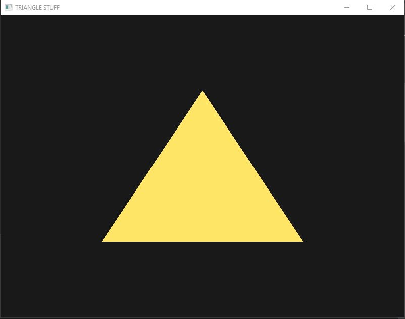
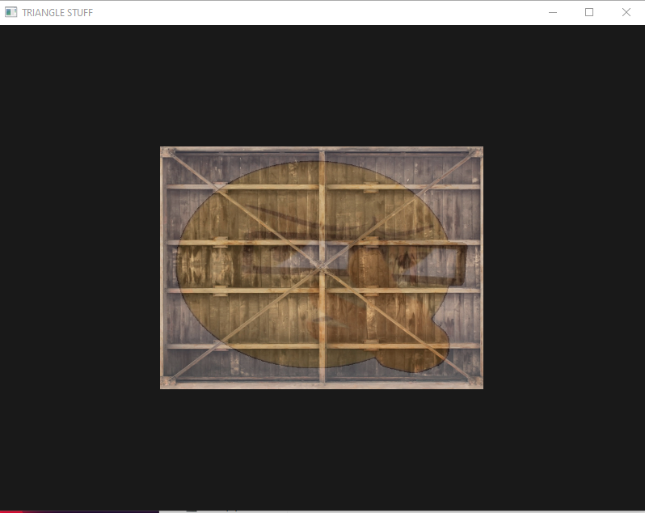
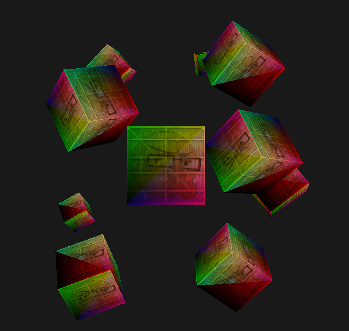
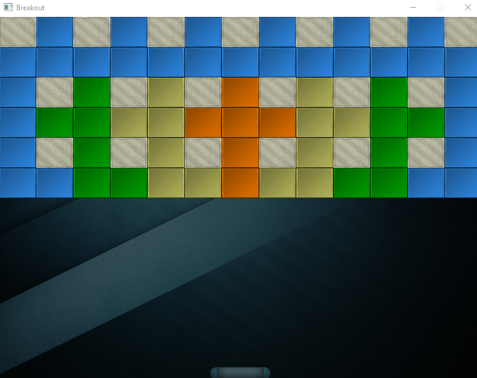

December/January Update - Jan 31st
I haven't updated this site in quite some time and I apologize.
From my last update I've been pretty busy trying to schedule myself while learning new things.
I also decided it would be better to guarantee a more indepth update towards the end of each month and maybe some periodic updates inbetween.
That way I could schedule myself a bit better instead of worrying about updating all the time.
(This update includes the rest of December and most of January.)
So, to start off, since December I've been going over Calculus 3 lectures online. Since understanding it is essential for game development. Thanks to Professor Leonard who's lectures you can find here , I've managed to learn a lot. I'm still working through these lectures as much as I can and you can find my notes (among other resources) here. The additional resources are notes on other things I've been reading for example the book "Game Physics" by David Eberly. My goal is not only to learn but to create resources to share with others trying to learn on their own.
Working with OpenGL
Learning OpenGL was a challenge I tackled to get a better understanding of some of the things I took for granted that engines like Unity or Unreal handle. If you don't know what OpenGL is it's an API that interacts with a GPU (Graphics Processing Unit) to draw 2D and 3D graphics. You can find the resources I used here if you want to learn more yourself. I managed to learn a lot about utilizing OpenGL. I went from making triangles, boxes, shaders, textures, boxes, to finally making a classic game of breakout. I'll talk more about the things I learned in the Breakout project and include a download later on since it's not quite finished yet.
Here is some of my progress below:
   So what's next?
So my plans for next month are to finish up some books that have been recommended to me, posting more notes, and finishing Calculus 3. As well as networking a bit more and getting involved with events here in New York. I'm still working on my Indignation project, but I've run into some walls trying to build up AI. I'm hoping to break past those walls and complete the project by the end of next month. Also speaking of events, later on today I'm going to be participating in my first Global Game Jam at NYU! I'll be sure to make a project page for whatever I make at the end of the event. Overall, these two months have been pretty exciting and I look forward to the next!